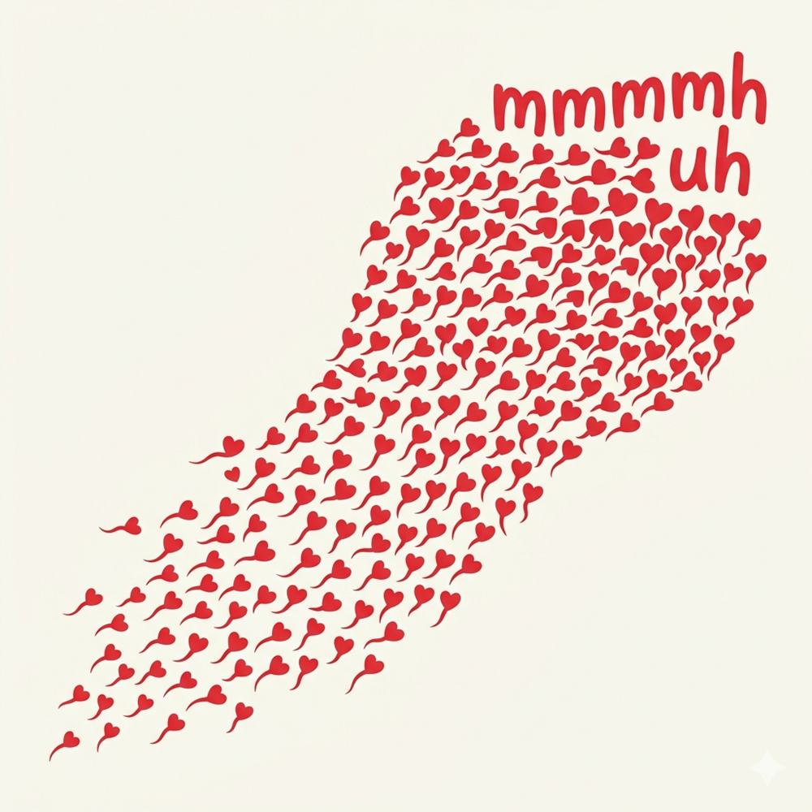
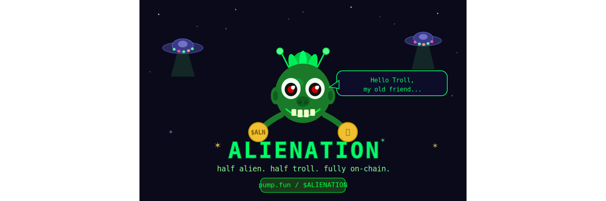
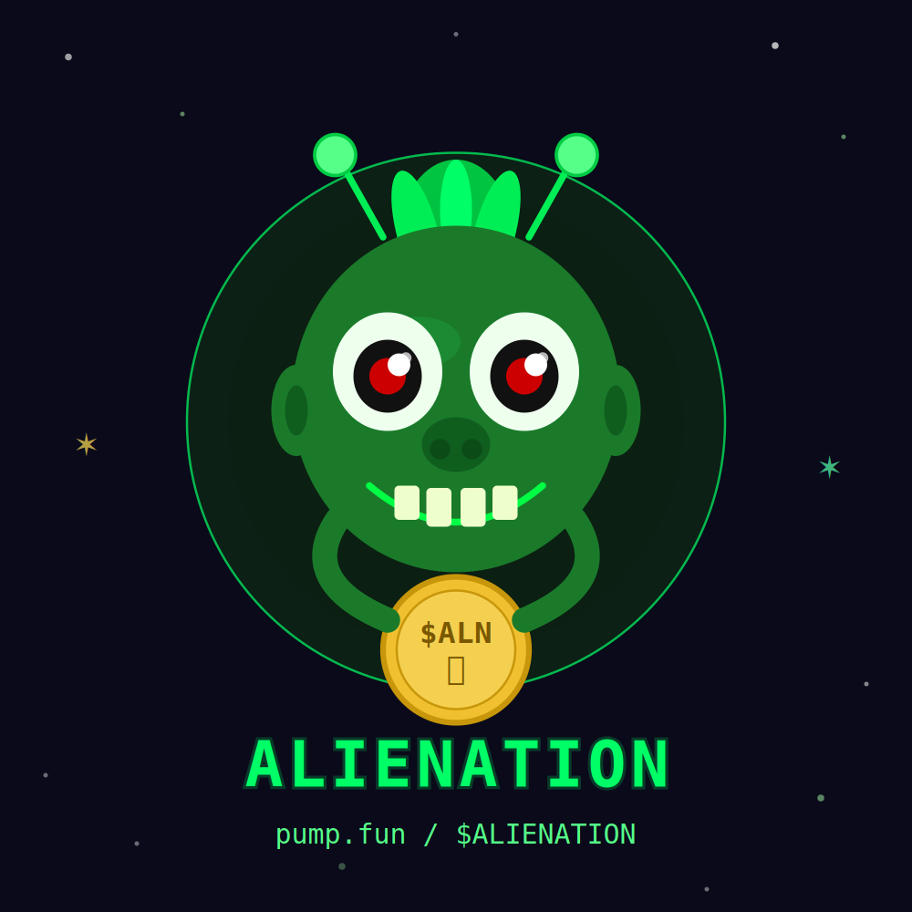
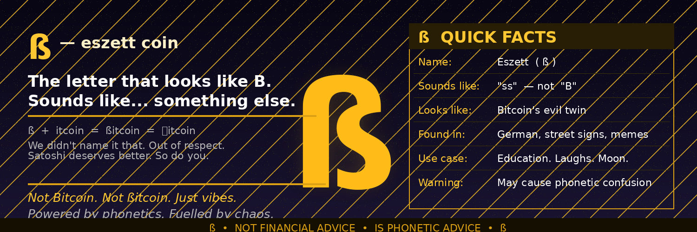
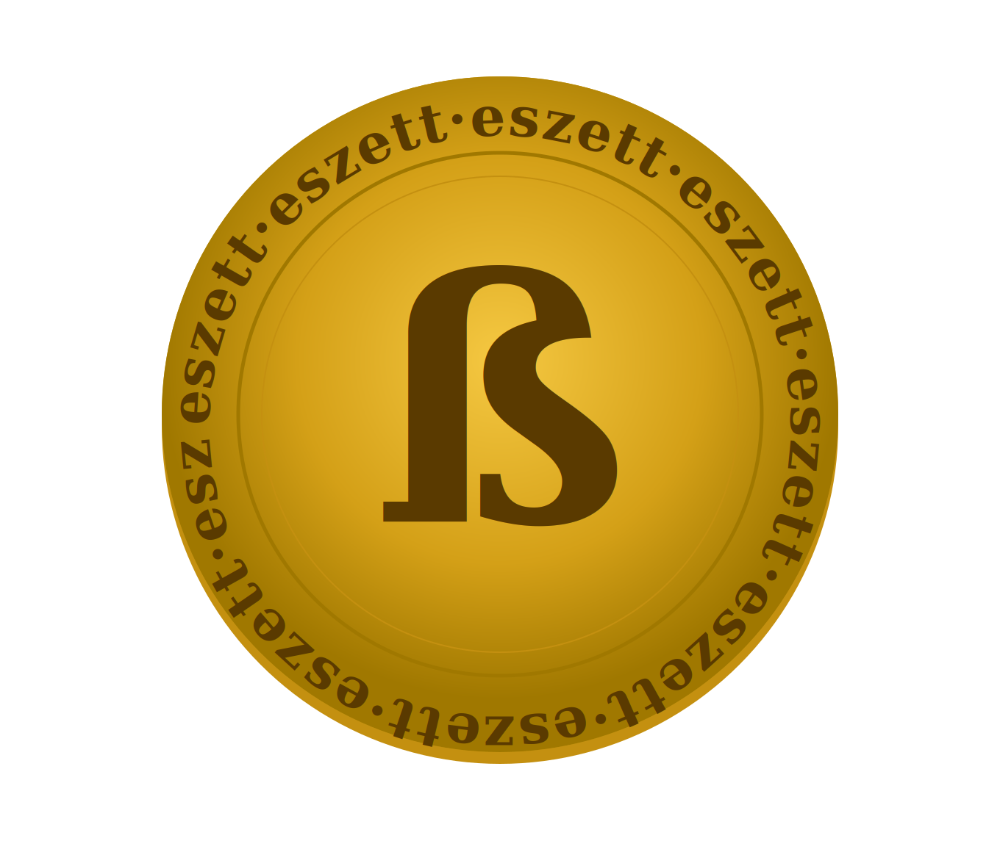
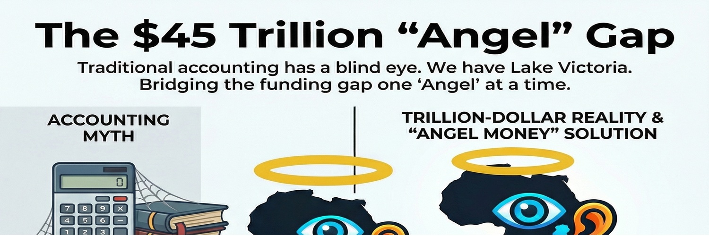
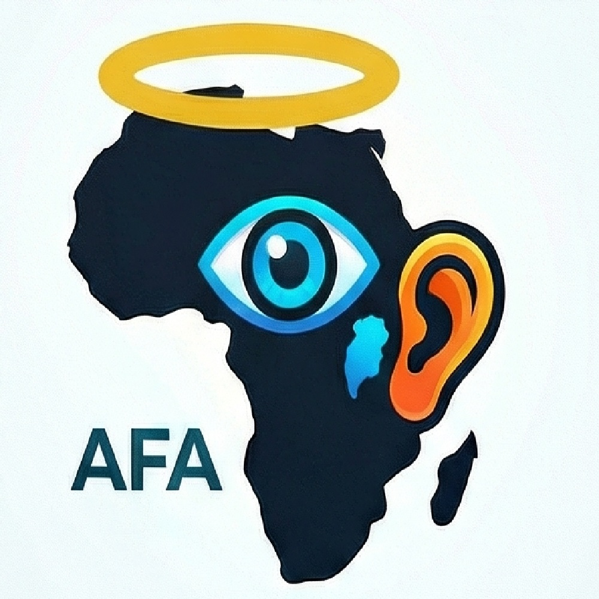

∞ ⋈ ∞ ∞ ⋈ ∞ ∞ ⋈ ∞ ∞ ⋈ ∞ ∞ ⋈ ∞
Memecoins
Memecoins have a similar purpose to a tangible lucky charm.
Kuhmmmoanity (MOAN)

Coincommunities.org are forming. The Cummunity is doing well. Let the
Kuhmmmoanity now grow. The theme song is "Give a bit of mmh to me" .
Moaning with another, whether it is sad or happy, is always better.
Link to Kuhmmmoanity's pump.fun.
Contract Address of Kuhmmmoanity (MOAN) on Solana:
FFNyStNiDJNpiiNbeJxPLQsYxtFca5aqBvk45t11pump
Alienation (ALN)


? What is ALIENATION? Picture this: you're hanging out online, minding your own
business, when a troll crawls out from under its bridge and starts causing chaos.
Comment sections implode. Friendships dissolve. Perfectly reasonable people suddenly
feel like strangers on their own planet. That, dear Earthling, is alienation — and
trolls have been the galaxy's leading manufacturer of it since the dawn of the
internet. Trolls don't argue in good faith. They poke, provoke, and vanish. They show up
uninvited, flip the table, and blame you for the mess. They are the reason your uncle
now believes the moon is a government projector. They are why comment sections need
moderators, moderators need therapy, and therapy needs a waiting list. ?
So where do the trolls go? Great news! If you're a troll who genuinely enjoys the
chaos — the prodding, the baiting, the gleeful watching of discourse unravel — there's
actually a place for you. Divided Party (DiP) welcomes you with open
(if slightly suspicious) arms. ? dividedparty.github.io You see, DiP is an
international political party built around the radical idea that people can disagree
on almost everything and still share a community. Members agree on a short list of
things they promise not to do to each other. And here's the kicker: trolling didn't
make the list. That's right. Trolling is not among the agreed-upon prohibitions at
Divided Party. So technically, by the letter of the DiP constitution, you're free
to troll away. Whether your fellow members will appreciate it is, of course,
a completely separate matter — and arguably the most entertaining social experiment
of our time. ? Why $ALIENATION? Because every troll leaves a trail of alienated
humans in their wake, and someone had to put that energy on-chain.
$ALIENATION is the coin of the trolled, by the trolls, for the vibes.
Half alien, half troll, fully on-chain. "Hello Troll, my old friend..." ?
Link to Alienation's pump.fun.
Contract Address of Alienation (ALN) on Solana:
J11gwUGW98qgNYnYwQ92Xa28L8H1FBAgRGPskqtxpump
Eszett coin (ß)


ß — The eszett coin
Not ßitcoin. We promise.
Meet ß — the most misunderstood letter in the German alphabet, and now, the most misunderstood coin on the blockchain.
Here's the joke hiding in plain sight:
The letter ß looks suspiciously like a B. Swap the B in Bitcoin for a ß, and suddenly you're not saying Bitcoin anymore. You're saying Shitcoin.
We didn't name it ßitcoin. We have too much respect for Satoshi for that. But we absolutely thought about it for longer than we'd like to admit.
What is ß actually?
Great question. The eszett (pronounced "ess-tset") is a German letter representing a sharp "ss" sound. Think of it as the linguistic equivalent of a double-edged sword —
looks tough, sounds sneaky. It appears in words like Straße (street) and Maßnahme (measure), and now, apparently, on the blockchain.
Why does this coin exist?
1. Because someone noticed that ß ≈ B and couldn't unsay it.
2. Because the world deserves more phonetic education.
3. Because every great crypto needs a great origin story, and "we thought the letter looked funny" is at least more honest than most whitepapers.
Is this Shitcoin?
Linguistically? Kind of, yes. Spiritually? We prefer eszett — a coin that sounds like something it isn't, looks like something it's not, and somehow still ends up in your wallet.
Just like crypto.
ß: Not Bitcoin. Not ßitcoin. Just a letter that got ambitious.
Link to Eszett coin's pump.fun.
Contract Address of eszett coin (ß) on Solana:
Dpjp8Y7sDbFFJLRy31uuaFqnguoRocDo6wKHa5XKpump
Launch Video of Eszett Coin (ß).
Real AFA Angel (RAFL)


Buying "Real AFA Angel (RAFL)" on Pumpfun, means the Africahead brand is supported and you
agree with the value system, governing Ipparts Exchange (IPPAEX). Buying RAFL, probably means
you will be one of the future venture capital angels of IPPAEX, buying/selling brand currencies with
Moyom (MYM) venture capital
angel money. The RAFL liquidity pool (LP) on Pumpfun,
is locked for always. That means Africahead cannot access funds from purchases of RAFL, because all funds
used to buy, goes into the LP, where it is locked, for when selling happens. The only financial benefit Africahead
can get is from holding RAFL tokens, Africahead had to buy, and from the creators reward, which is
for starters 0.3% of trading volume.
Link to RAFL's pump.fun
Contract Address of RAFL on Solana:
CQqEnJgA1SE9qbnC2ypuhxNB4kqbstzjs6V6q1H9pump